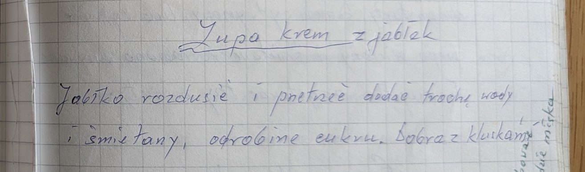

Zupa krem z jabłek


Składniki
- jabłka
- trochę wody
- śmietana
- odrobina cukru
- kluski
Przygotowanie
- Jabłka rozdusić i przetrzeć.
- Dodać trochę wody, śmietany i odrobinę cukru.
- Podawać z kluskami.
Oryginalny zapis
Zupa krem z jabłek Jabłko rozdusić i przetrzeć dodać trochę wody i śmietany, odrobinę cukru. Dobra z kluskami